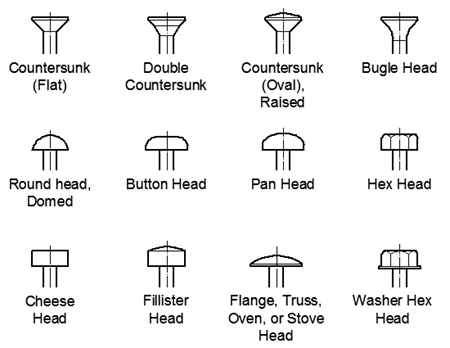

[Ref]
The screw diameter can't be too small, else it won't be able to hold enough load - the screw may end up being too loose. It also can't be too large as it could cause the substrate material to crack.
Benefits of having a fatter screw
Increased Surface Area
A fatter screw has a larger diameter, which means it has more surface area in contact with the surrounding material. This increased contact area enhances the friction between the screw threads and the material, leading to better grip and stability.
Higher Load-Bearing Capacity
The greater thickness of a fatter screw allows it to distribute the load or force over a larger area within the wall material. This reduces the risk of the screw pulling out or causing damage to the material, making it suitable for applications requiring higher load-bearing capacity.
Less Vulnerable to Shear Forces
In addition to its ability to resist tensile forces (pulling out), a thicker screw is often more resistant to shear forces (sliding or twisting). This is especially important in applications where the fixture may experience lateral forces or torque.
Reduced Risk of Stripping
Fatter screws generally have deeper and more robust threads. These threads are less likely to strip or wear out when driving the screw into the material, ensuring a secure attachment.
Improved Resistance to Over-Tightening
Thicker screws tend to be more forgiving when it comes to over-tightening. They are less likely to break or damage the material if excessive force is applied during installation.
Screw head types

Great video on different screw heads with a focus on how to transfer force onto a screw.